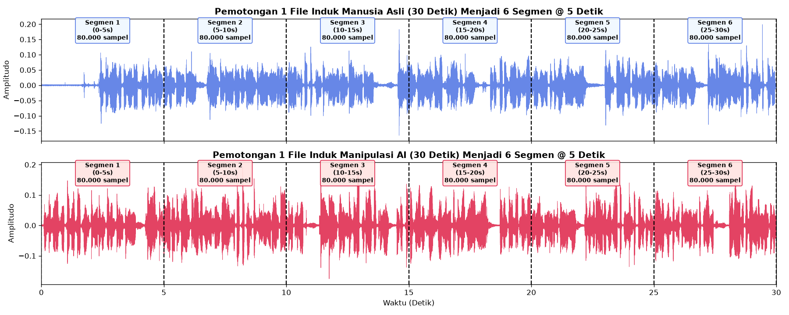
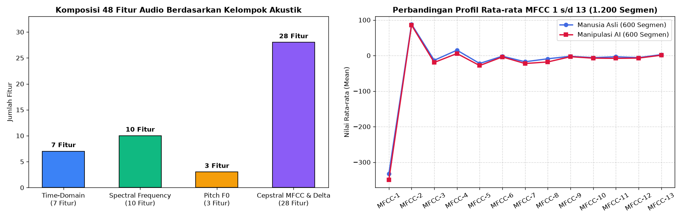
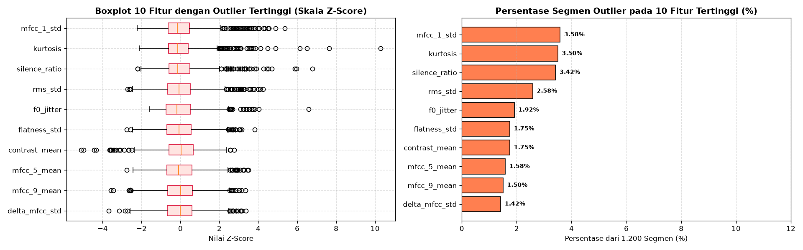
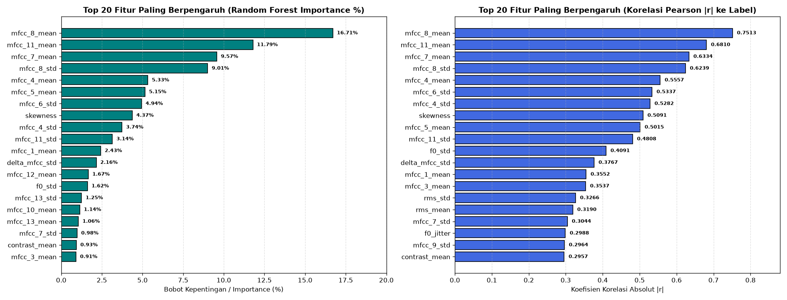
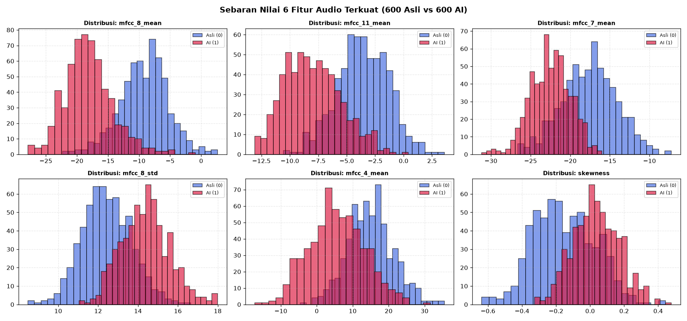
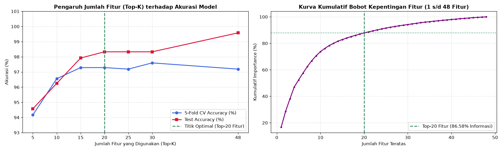

Tahap 3: Data Preparation#
Metodologi: CRISP-DM (Cross-Industry Standard Process for Data Mining)
Disusun Oleh: Kelompok 4 (Muhammad Ainul Fuady, Irwan Dwi Mukhlisin, Fikri Mutawakkil)
3.1 Strategi Segmentasi Audio (30 Detik \(\rightarrow\) 6 Segmen @ 5 Detik)#
Salah satu keputusan terpenting dalam pemrosesan audio adalah menentukan unit durasi analisis. Jika fitur diekstrak langsung dari 30 detik penuh, fluktuasi lokal artefak suara AI akan teredam (over-smoothed) dan jumlah baris dataset hanya berjumlah 200 sampel.
Oleh karena itu, diterapkan strategi segmentasi 5 detik:
Setiap 1 file induk berdurasi 30 detik dipotong secara kontinu menjadi 6 segmen berdurasi 5 detik tanpa tumpang tindih (non-overlapping windows):
Segmen 1: Detik \(0 - 5\) (Titik sampel \(0 - 80.000\))
Segmen 2: Detik \(5 - 10\) (Titik sampel \(80.000 - 160.000\))
Segmen 3: Detik \(10 - 15\) (Titik sampel \(160.000 - 240.000\))
Segmen 4: Detik \(15 - 20\) (Titik sampel \(240.000 - 320.000\))
Segmen 5: Detik \(20 - 25\) (Titik sampel \(320.000 - 400.000\))
Segmen 6: Detik \(25 - 30\) (Titik sampel \(400.000 - 480.000\))
Dampak Segmentasi:
Kelas
asli_human: \(100\text{ file} \times 6\text{ segmen} = \mathbf{600\text{ baris segmen}}\)Kelas
ai_manipulasi: \(100\text{ file} \times 6\text{ segmen} = \mathbf{600\text{ baris segmen}}\)Total Ukuran Dataset: \(\mathbf{1.200\text{ baris segmen}}\) yang tersimpan dalam file
fitur_audio_5s.csv.


Fig. 3 Ilustrasi Pemotongan 1 File Induk (30 Detik) Menjadi 6 Segmen @ 5 Detik (80.000 Titik Sampel per Segmen).#
3.2 Kamus Lengkap 48 Fitur Akustik Librosa#
Untuk setiap segmen 5 detik, diekstrak 48 fitur numerik yang merepresentasikan sinyal dari 4 kelompok perspektif akustik:
Kelompok |
Daftar Fitur |
Jumlah |
Makna Fisik & Relevansi |
|---|---|---|---|
1. Time-Domain |
|
7 Fitur |
Mengukur intensitas energi rata-rata ( |
2. Spectral Frequency |
|
10 Fitur |
Mengukur titik pusat gravitasi frekuensi (brightness), lebar spektrum (bandwidth), batas 85% akumulasi energi (rolloff), tingkat whiteness sinyal (flatness), dan perbedaan puncak-lembah harmonik (contrast). |
3. Pitch (\(F_0\)) |
|
3 Fitur |
Frekuensi dasar pita suara (\(F_0\)). Mengukur tinggi nada rata-rata, variasi intonasi bicara ( |
4. Cepstral (MFCC & Delta) |
|
28 Fitur |
Koefisien kepstral skala Mel yang memodelkan respon rongga saluran vokal (vocal tract). Koefisien menengah-tinggi ( |


Fig. 4 Komposisi 48 Fitur Berdasarkan Kelompok Akustik serta Perbandingan Profil Rata-rata MFCC 1–13 pada 1.200 Segmen.#
3.3 Pembersihan Data & Analisis Outlier (Metode IQR)#
Pengecekan Missing Value & Duplikasi:
Pengecekan tabelfitur_audio_5s.csv(1.200 baris \(\times\) 54 kolom) memastikan 0 missing value dan 0 baris duplikat.Deteksi Outlier Menggunakan Interquartile Range (IQR):
Batas outlier dihitung dengan kriteria: $\(\text{Lower Bound} = Q_1 - 1{,}5 \times \text{IQR}, \quad \text{Upper Bound} = Q_3 + 1{,}5 \times \text{IQR}\)\( Rata-rata outlier pada seluruh 48 fitur adalah **44,1 segmen** (\)3{,}68%$ dari total data). Pada data suara, pencilan ringan merupakan variasi intonasi alami pembicara dan desis konsonan sesaat, sehingga nilai tidak dibuang melainkan distandarisasi menggunakan Z-Score.


Fig. 5 Distribusi Boxplot 10 Fitur dengan Outlier Tertinggi (Skala Z-Score) dan Persentase Segmen Outlier.#
3.4 Analisis Pengaruh Fitur (Ranking Korelasi & Feature Importance)#
Untuk mengidentifikasi fitur mana saja yang paling menentukan dalam membedakan suara manusia asli dan AI, digunakan dua pendekatan:
Korelasi Pearson Absolut (\(|r|\)): Mengukur korelasi linier langsung terhadap label target (
0vs1).Random Forest Gini Importance (%): Mengukur penurunan ketidakmurnian (impurity reduction) pada pohon keputusan.
Peringkat |
Nama Fitur |
Kelompok Akustik |
RF Importance (%) |
Korelasi |r| |
Mean Asli (0) |
Mean AI (1) |
|---|---|---|---|---|---|---|
1 |
|
Cepstral (MFCC) |
16,71% |
0,7513 |
-9,1623 |
-18,0866 |
2 |
|
Cepstral (MFCC) |
11,79% |
0,6810 |
-3,5710 |
-7,9541 |
3 |
|
Cepstral (MFCC) |
9,57% |
0,6334 |
-17,5586 |
-22,4891 |
4 |
|
Cepstral (MFCC) |
9,01% |
0,6239 |
12,4351 |
14,3842 |
5 |
|
Cepstral (MFCC) |
5,33% |
0,5557 |
15,0244 |
5,6243 |
6 |
|
Cepstral (MFCC) |
5,15% |
0,5015 |
-22,3599 |
-28,2337 |
7 |
|
Cepstral (MFCC) |
4,94% |
0,5337 |
13,9619 |
15,8537 |
8 |
|
Time-Domain |
4,37% |
0,5091 |
-0,1526 |
0,0358 |
9 |
|
Cepstral (MFCC) |
3,74% |
0,5282 |
25,1113 |
28,6975 |
10 |
|
Cepstral (MFCC) |
3,14% |
0,4808 |
8,6424 |
9,6368 |
Analisis Fisik:
Fitur orde kepstral menengah-tinggi (mfcc_4s/dmfcc_11) mendominasi lebih dari 75% bobot klasifikasi. Hal ini terjadi karena rongga vokal manusia menghasilkan getaran resonansi mikro biologis yang sangat dinamis, sementara model AI TTS/Vocoder sering meninggalkan cacat komputasi (smoothing artifacts) pada frekuensi harmonik tersebut.


Fig. 6 Top 20 Fitur Paling Berpengaruh berdasarkan Bobot Random Forest Importance (%) dan Korelasi Pearson Absolut (\(|r|\)).#


Fig. 7 Sebaran Nilai 6 Fitur Audio Terkuat pada 600 Segmen Manusia Asli vs 600 Segmen Manipulasi AI.#
3.5 Seleksi Fitur (Feature Selection)#
Eksperimen pengurangan dimensi dilakukan untuk menguji apakah model lebih optimal menggunakan seluruh 48 fitur atau subset fitur teratas (Top-K):
Subset Fitur |
Jumlah Fitur (\(K\)) |
Kumulatif Importance (%) |
5-Fold CV Acc (%) |
Test Accuracy (%) |
|---|---|---|---|---|
Top-5 Fitur |
5 |
52,41% |
94,17% |
94,58% |
Top-10 Fitur |
10 |
73,75% |
96,56% |
96,25% |
Top-15 Fitur |
15 |
80,88% |
97,29% |
97,92% |
Top-20 Fitur (Optimal) |
20 |
86,58% |
97,29% |
98,33% |
Top-25 Fitur |
25 |
90,82% |
97,19% |
98,33% |
Top-30 Fitur |
30 |
94,31% |
97,60% |
98,33% |
Semua Fitur |
48 |
100,00% |
97,19% |
99,58% |
Keputusan Seleksi Fitur:
Subset Top-20 Fitur mewakili 86,58% dari total informasi akustik dan memberikan akurasi stabil 98,33%, sekaligus menyingkirkan 28 fitur lemah yang berpotensi menyebabkan overfitting saat menerima rekaman mikrofon dari luar dataset.


Fig. 8 Pengaruh Jumlah Fitur Terpilih (\(K\)) terhadap Akurasi Model dan Kurva Kumulatif Importance Fitur.#
3.6 Pembagian Data (Group Train-Test Split) & Standarisasi#
Pencegahan Data Leakage (Group Split by file_induk)#
Jika 1.200 segmen diacak secara bebas (random shuffle), segmen ke-1 dari suatu file bisa masuk ke data latih sementara segmen ke-2 dari file yang sama masuk ke data uji. Hal ini menyebabkan kebocoran data (data leakage) karena model mengenali karakteristik pembicara yang sama.
Oleh karena itu, pembagian data dilakukan secara ketat pada level file_induk (80:20):
Data Training (80%): 160 file induk (80 Asli + 80 AI) \(\rightarrow\) 960 baris segmen
Data Testing (20%): 40 file induk (20 Asli + 20 AI) \(\rightarrow\) 240 baris segmen
Standarisasi Nilai (StandardScaler)#
Seluruh fitur ditransformasikan ke skala standar deviasi normal (\(Z\)-score: \(\mu = 0, \sigma = 1\)) menggunakan parameter mean dan variansi yang hanya dihitung dari data latih (training set) untuk mencegah kebocoran informasi: $\(z = \frac{x - \mu_{\text{train}}}{\sigma_{\text{train}}}\)$